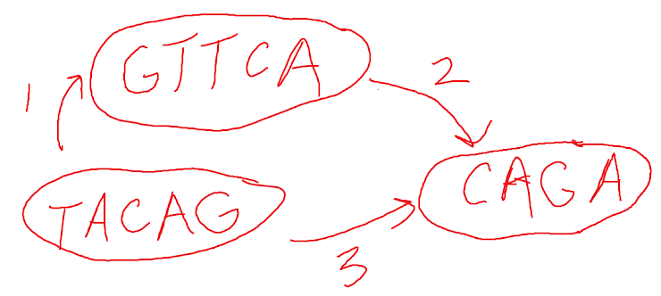

Based on content taught by Donna Slonim in Spring 2022.
1. The Needleman-Wunsch sequence alignment algorithm is an example of a(n)...
2. Consider the following scoring scheme for sequence alignment. This scoring scheme would be appropriate for...
Match score = -3 Mismatch score = 1 Gap score = 2
3. One parameter of the BLAST algorithm is a scoring threshold \(T\) (where "neighbor words" of a \(w\)-mer is defined as all sequences that align with the \(w\)-mer with a score of at least \(T\)). Lowering the \(T\) value would increase the _____, which would _____.
4. When computing a best MSA using the bounded dynamic programming approach, which of the following would be an upper bound on the similarity score?
If there are multiple correct answers, select the one that would be the tightest upper bound.
5. Consider the following three sequences. Suppose that we want to align them using the star alignment method. Assuming that all matches are treated the same, all mismatches are treated the same, and there are never any gaps, which sequence would be at the "center" of the star?
Sequence 1: ATTCG Sequence 2: ATACG Sequence 3: ATTCC
6. Suppose that at position 2 in a local MSA, there are the following nucleotides: A, A, A, and A. Assuming pseudocounts of 1, what is the frequency of A at position 2?
7. The compressive BLAST algorithm involves _____ preprocessing and _____ search.
8. Suppose that there exists a branching node in a de Bruijn graph of \(k\)-mers. What does this imply?
9. Consider the following overlap graph. What is one possible result of executing greedy assembly on that graph?
TACAGTTCAGATACAGAGTTCATACAGGTTCACAGATACAGCAGAGTTCA10. Organisms that overall have a high GC content will have the most significant bias towards G and C in the _____ base of a codon.
11. Which of the following algorithms finds the most likely state sequence when given a sequence of observable symbols and the specification of a Hidden Markov Model?
12. Suppose that in a given experiment, three people with sickle cell anemia had the following levels of expression of Gene 1: 7, 9, 11. Further suppose that three people without the disease had the following levels of expression of the same gene: 2, 4, 3. On average, there was a(n) _____ in expression of Gene 1 for those with sickle-cell anemia.
13. The molecular clock hypothesis holds for _____ trees, which satisfy the _____ condition.
14. The problem of finding the most parsimonious tree when given an MSA can be solved in... (select the one that is most efficient)
15. Anomaly detection is a method of classification that seeks to classify data points as "normal" or "anomalous." Such a classifier is trained with...